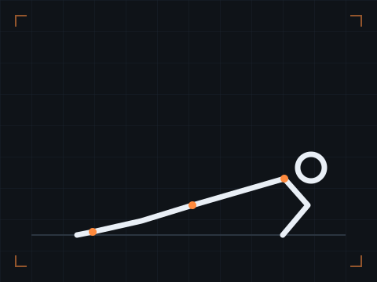

01
Push-ups
PushThe most accessible pushing movement: it builds chest, triceps and shoulders while asking your trunk to stay braced.
- Focus
- Horizontal push
- Equipment
- Floor
- Level
- Beginner
How to perform it
- Place your hands slightly wider than your shoulders, fingers pointing forward.
- Lower your chest toward the floor keeping your body aligned, elbows at about 45°.
- Push into the floor until your arms are straight, without letting your lower back sag.
Breathe. Inhale as you lower, exhale as you push.
Common mistakes
- Arched lower back or hips in the air.
- Elbows flared out at 90°.
- Cut range: the chest stays far from the floor.
EasierKnee push-ups, or hands elevated on a table.
HarderFeet elevated, then archer push-ups.
Safety. No shoulder or wrist pain: reduce the range or elevate your hands.